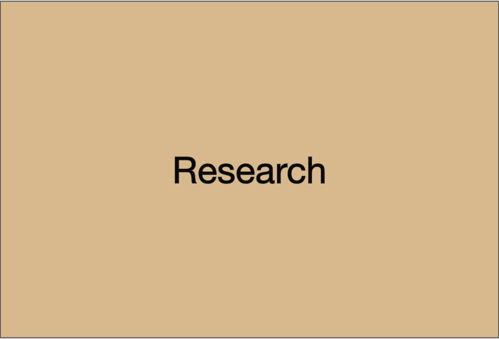
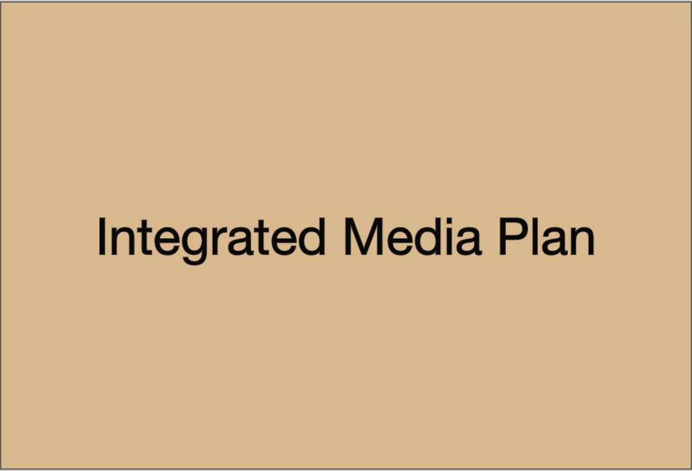
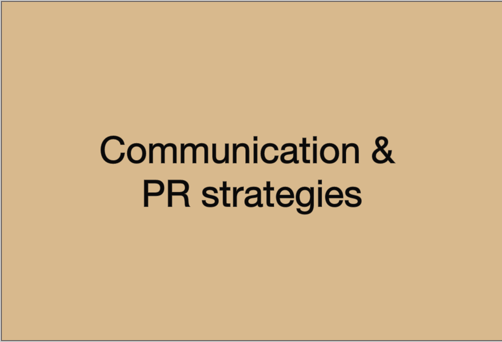
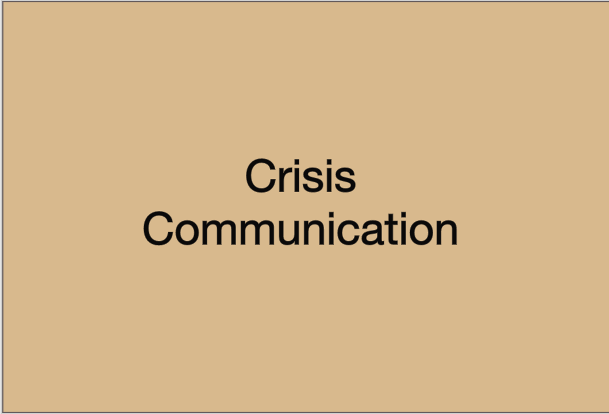
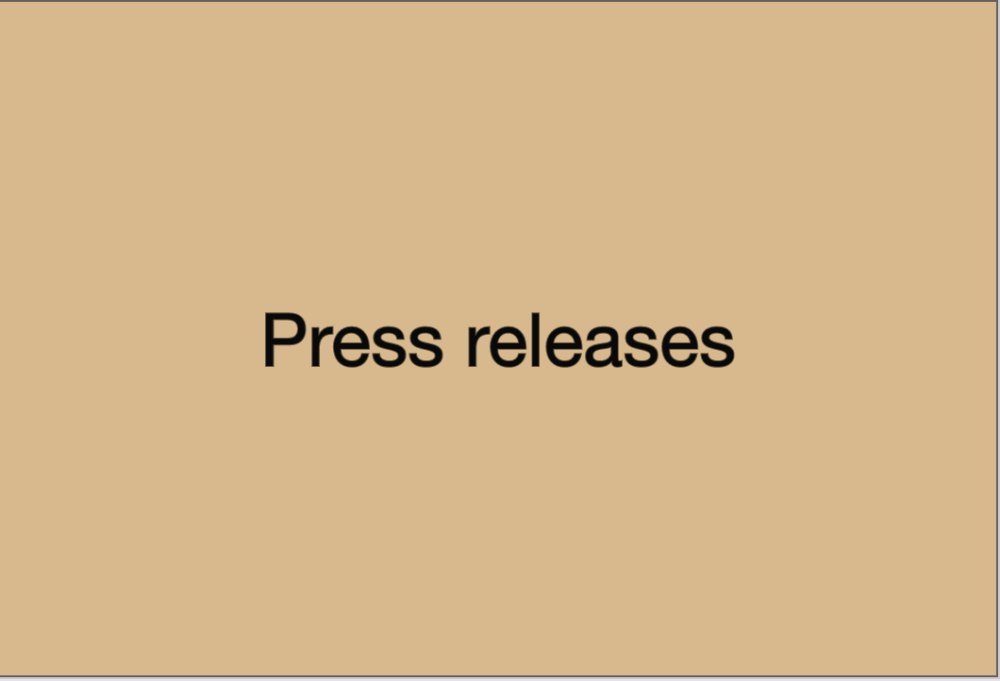

About
Story-driven journalist a depth at developing articles and investigating issues with tenacious and unwavering dedication. Offering seven years of experience in broadcasting and online media. Committed to working quickly with accuracy and knowledge of research, communication, web designing and editing programs. Self-motivated, detail-oriented, organized, engaging, media-savvy, fast learner and able to multi-task.
Vision
What Can I Do For You?




